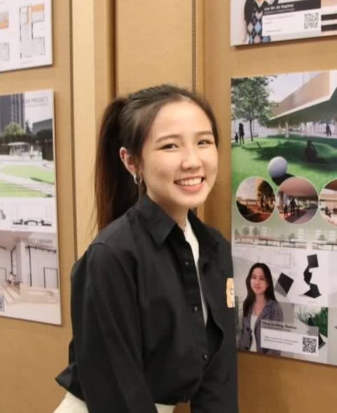

About Me

I’m Sherica Chua, an aspiring architect and passionate creative mind with a unique vision. From a young age, I’ve been entranced by the profound impact that architecture has on our lives and the world around us. This fascination has been the driving force behind my journey to pursue a Bachelor of Architecture, where I explore the art of shaping spaces that inspire, comfort, and serve the needs of our communities.
In addition to my architectural pursuits, my heart beats for art and design. This love for aesthetics and user-centered creativity has led me to pursue a minor in UX/UI design. I find immense joy in connecting with people and crafting experiences that resonate with them. My motivation in creating, whether it’s through architectural wonders or intuitive digital interfaces, is rooted in the user—designing for their needs, desires, and emotions.
Join me in this exploration of the intersection between the physical and digital worlds, where architecture and UX/UI design blend seamlessly to shape the environments of today and tomorrow. Together, let’s create spaces and experiences that leave a lasting impact on our lives.
Welcome to my world of design, where every project is a canvas for innovation and a testament to the power of thoughtful, user-centered creation.
____
Education & Leaderships
2023-2025
Bachelor in Architecture, with Minor in Interactive Media Development
* National University of Singapore
2020-2023
Diploma in Interior Design with Merit
* Singapore Polytechnic
VIEW CERTS*last updated 2022
2022-2023 Gradshow Leader - Org Secretary
2022 Class Management Committee - Deputy Class Representative
2022 Polytechnic Forum
2022 DID Showcase - Org Secretary
2022 The Vertical Live Project Workshop
2022 Pre-University Seminar
2021-2022 Academic School Student Committee - President (SIDS Student Chapter)
2021 LEAP Programme (School Leaders)
2021-2022 SP NYAA Ambassador
2020-2021 PA - SP Community Leadership Programme
2020 Class Management Committee (Treasurer)
2018-2019
GCE O Level
Loyang View Secondary School
(School Merge with Green View)
2018 Class Vice-Chairperson
2018 Senior Student Councillor
2018 Girl Guides - Assistance Company Leader (Logistics)
2018 NYAA Silver Award
2015-2017
GCE N Level
Loyang Secondary School
2015-2018 Student Councillor
2017-2018 Girl Guides - Assistance Company Leader (Logistics)
2016 NYAA Bronze Award
2017 NYAA Silver Award
2017 Participated Overseas Educational Programme (OEP) in Suzhou, China
2008-2014
PSLE
Meridian Primary School
Didn’t participate much as was trying to improve my results, but was very active with events held by the school such as Sports Day, Magical Night, etc. But always want to be a leader to make an impact.
Achievements
2020-2023
Diploma in Interior Design with Merit
* Singapore Polytechnic
2022-2023 Diploma with Merit
2022-2023 Director’s Honour Roll Award - Top 5%
2023 Edusave Certification of Academic Achievement 2022
2023 Edusave Merit Bursary 2021
2021-2022 Director’s Honour Roll Award - Top 5%
2022 Edusave Certification of Academic Achievement 2022
2022 Edusave Merit Bursary 2021
2022 Awarded Excellence Award - Outstanding Contributions (Individual Category - School of Architecture & Built Environment)
2021 Edusave Certification of Academic Achievement 2021
2021 Edusave Merit Bursary 2021
2020-2021 Awarded in Appreciation Class Management Committee (Treasurer)
2015-2019
GCE N & O Level
Loyang View Secondary School
2019 GCE N Level B3 for Art
2018 GCE N Level A1 for Art
2017 Awarded Academic Excellence Award - Mathematics and Art
2017 Awarded Academic Excellence Award - Outstanding Academic
2017 Best Banner Award Competition (Gryphon Youth
Outreach Programme)
2016 Awarded Academic Excellence Award - Outstanding Academic
2016 Edusave Merit Bursary 2016
Get In Touch
From
Singapore, Singapore